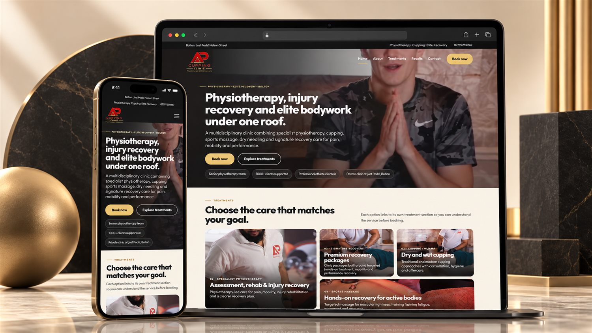

Case study · Physiotherapy & recovery
AP Cupping Clinic
A modern clinic website that makes a multi-service treatment offer easier to navigate.

Industry
Physiotherapy & recovery
Website type
WordPress clinic website
Role
WordPress design and development, responsive implementation, migration and launch support.
The requirement
Make a broad treatment offer easy to explore.
The project brought physiotherapy, cupping, sports massage, dry needling and recovery services into one coherent website with a direct booking path.
Work completed
-
01
Structured treatments around visitor goals
-
02
Created clear booking and treatment pathways
-
03
Built responsive layouts for service discovery on mobile
-
04
Handled migration and post-migration checks